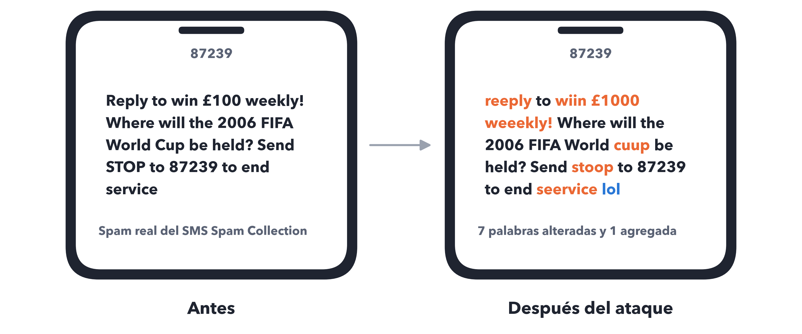
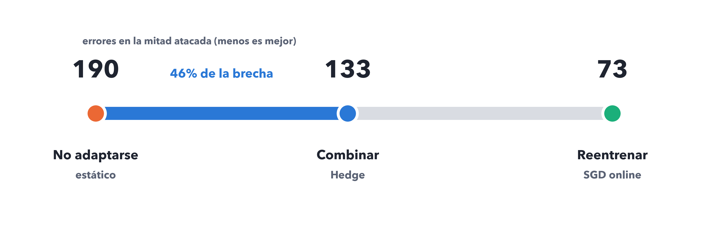
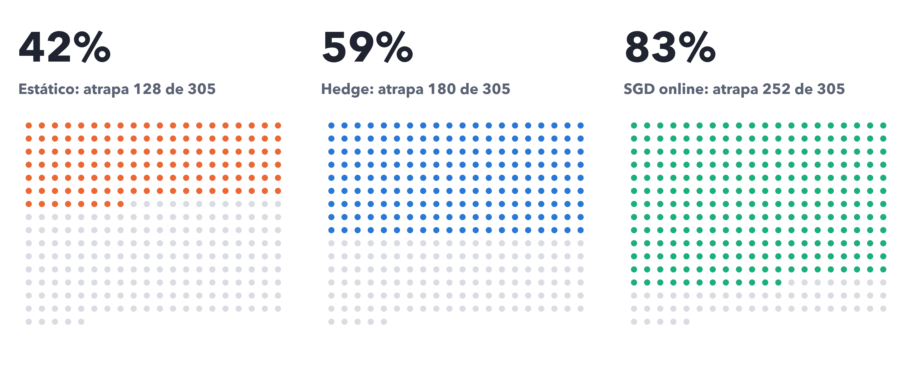
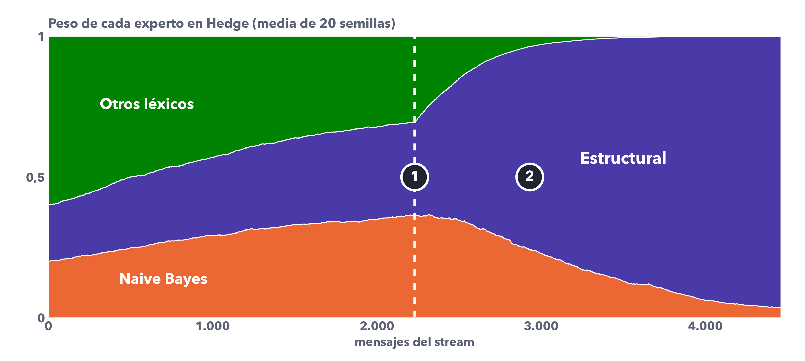
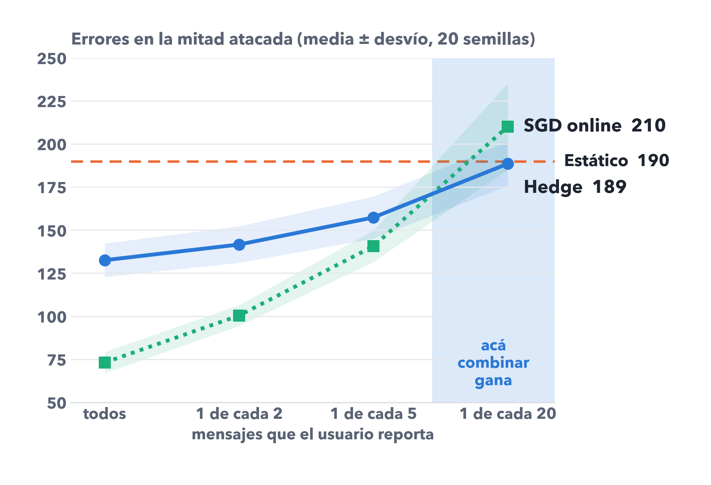
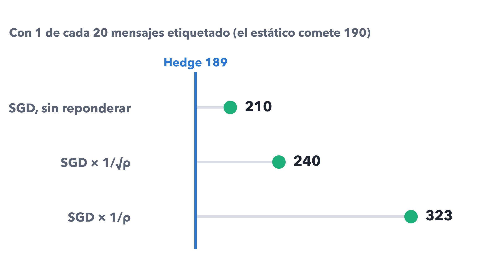
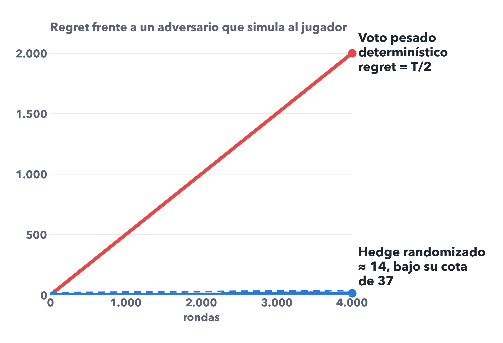
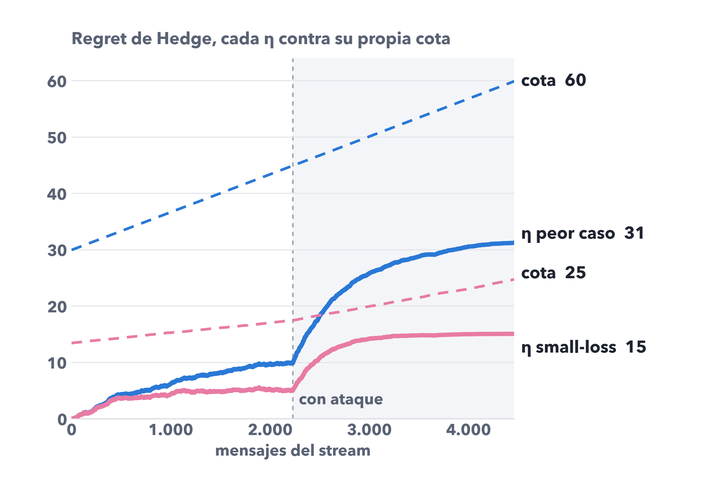

Combinar o reentrenar
Pablo Díaz y Ezequiel Martinez · Tópicos Avanzados en Ciencia de Datos (MCD210) · UdeSA
TÓPICOS AVANZADOS EN CIENCIA DE DATOS · MCD210 · UDESA
Combinar
o reentrenar
o reentrenar
Hedge contra reentrenamiento online en un filtro de spam bajo ataque
Pablo Díaz · Ezequiel Martinez
reeply
wiin
weeekly
cuup
stoop
seervice
lol
2
EL PROBLEMA
Un spammer que aprende a esquivar el filtro
Un SMS real del corpus, atacado por nuestro código: crece una sola palabra.
HALLAZGOS

SPAM QUE ATRAPA EL FILTRO ESTÁTICO
85%
sin ataque
42%
con ataque
vocal duplicada en las palabras que más delatan spam
palabra típica de mensajes legítimos
Ataque «good word» de Lowd & Meek (2005) más ofuscación de las 800 palabras más delatoras. Media de 20 permutaciones (semillas) del SMS Spam Collection.
3
EL PROBLEMA
Dos formas de defenderse
HALLAZGOS
Combinar
Hedge sobre 5 expertos congelados
Cinco clasificadores entrenados una vez. Hedge no los toca: reparte la confianza entre ellos y la mueve hacia el que acierta.
Aprende 5 pesos
Reentrenar
SGD online, un solo modelo
Un modelo que se actualiza con cada mensaje etiquetado. Puede aprender palabras que nunca vio, como «wiin».
Aprende un peso por palabra
“The only remedy we know of is frequent retraining.”
Lowd & Meek (2005), sobre ataques a filtros de spam. Es la tesis que ponemos a prueba.
Expertos: Naive Bayes, regresión logística, árbol, reglas y uno estructural que mira el formato.
4
EL PROBLEMA
Dos preguntas
HALLAZGOS
1
¿Cuánto se recupera combinando expertos congelados, sin reentrenar nada?
Lo responde el hallazgo 1
2
¿Cuánta etiqueta hace falta? En la práctica, el usuario reporta pocos mensajes.
Lo responde el hallazgo 2
Y dos precisiones sobre la teoría vista en clase: qué algoritmo garantiza la cota, y para qué tasa de aprendizaje vale (hallazgo 3). Al final, lecciones de método (hallazgo 4).
5
DISEÑO
Cómo lo medimos
Cada mensaje del stream es una ronda: predecir, ver la etiqueta, actualizar.
HALLAZGOS
WARM-UP
1.114 SMS
Se entrenan los modelos; los 5 expertos quedan congelados.
STREAM SIN ATAQUE
2.230 SMS
Los tres competidores ven la misma secuencia de mensajes.
STREAM CON ATAQUE
2.230 SMS
Todo spam llega ofuscado. Acá se mide quién se recupera.
QUÉ MEDIMOS
Spam atrapado (SC): qué parte del spam se detecta
Legítimo bloqueado (BH): qué parte del correo bueno se pierde
MCC: un resumen robusto al desbalance
Errores en la mitad atacada: la cifra que comparamos
Legítimo bloqueado (BH): qué parte del correo bueno se pierde
MCC: un resumen robusto al desbalance
Errores en la mitad atacada: la cifra que comparamos
87%
de acierto sin marcar nada como spam: por eso no usamos accuracy.
SMS Spam Collection (Almeida et al., 2011): 5.574 SMS, 13,4% spam. 20 permutaciones del orden: media ± desvío.
6
MÉTODO
Hedge en un minuto
HALLAZGOS
pesoi ← pesoi · e−η · error
1
Los cinco expertos arrancan con el mismo peso: 1/5.
2
Cada error achica el peso del experto que se equivocó.
3
En cada mensaje se sortea un experto según los pesos.
Regret: cuántos errores de más comete Hedge frente al mejor experto fijo. La teoría garantiza que crece como √T, no como T.
LOS CINCO EXPERTOS
Naive Bayes
léxico; también es el modelo estático
Regresión logística
léxica
Árbol de decisión
léxico
Reglas
léxico
Estructural
9 rasgos de formato: largo, dígitos, teléfonos, £, mayúsculas…
Freund & Schapire (1997). Los colores de los expertos se mantienen en todos los gráficos.
7
HALLAZGO 1 · ¿CUÁNTO SE RECUPERA SIN REENTRENAR?
Combinar recupera casi la mitad, sin reentrenar
Errores en la mitad atacada: Hedge recorre el 46% del camino entre no adaptarse y reentrenar.
HALLAZGOS

46% ± 13 entre semillas. Reentrenar sigue siendo lo mejor con todas las etiquetas, como dicen Lowd & Meek; combinar hace casi la mitad del trabajo sin tocar ningún modelo.
Media de 20 permutaciones (semillas) del SMS Spam Collection. Ataque desde la mitad del stream.
8
HALLAZGO 1
De 305 spams atacados, Hedge atrapa 52 más
Cada punto es un spam de la mitad atacada; en color, los que el filtro detecta.
HALLAZGOS

Media de 20 permutaciones (semillas) del SMS Spam Collection. Ataque desde la mitad del stream.
9
10
HALLAZGO 1
Por qué funciona: la apuesta ya estaba cubierta
Peso de cada experto en Hedge a lo largo del stream.
HALLAZGOS

1
Al llegar el ataque, el peso estaba repartido en tercios: Naive Bayes 0,36, estructural 0,33, el resto 0,31.
2
El ataque rompe a los léxicos y el peso migra al estructural en unos 1.000 mensajes: termina con 0,96.
El estructural mira formato, no palabras: este ataque no lo toca.
Media de 20 permutaciones (semillas) del SMS Spam Collection. Ataque desde la mitad del stream.
11
HALLAZGO 2 · ¿CUÁNTA ETIQUETA HACE FALTA?
Con pocas etiquetas, combinar le gana a reentrenar
Errores en la mitad atacada, según cuántos mensajes reporta el usuario.
HALLAZGOS

15 de 20
semillas en las que gana Hedge cuando el usuario reporta 1 de cada 20 mensajes
210 > 190
errores: con tan pocas etiquetas, SGD termina peor que no adaptarse
Con 1 de cada 5 o más, reentrenar gana en al menos 18 de 20 semillas.
Barrido de ρ, la probabilidad de ver la etiqueta. Hedge usa el estimador ℓ/ρ con η_ρ = √ρ · η_T. Media de 20 permutaciones (semillas) del SMS Spam Collection.
12
HALLAZGO 2
No es un artefacto de cómo se pondera
Errores en la mitad atacada con 1 de cada 20 mensajes etiquetado.
HALLAZGOS

¿Y si SGD compensa las etiquetas que faltan pesando más cada ejemplo, como hace Hedge?
Empeora: con pocos ejemplos, pasos más grandes sobreajustan a cada uno.
Hedge aprende 5 pesos. Reentrenar, uno por cada palabra nueva.
Lo que sí paga Hedge es varianza: con ρ = 0,05 cada observación pesa ≈ 4,5 veces más.
Media de 20 permutaciones (semillas) del SMS Spam Collection. Ataque desde la mitad del stream.
13
HALLAZGO 3 · LA TEORÍA, CON PRECISIÓN
La cota de la teoría no es la del voto pesado
HALLAZGOS
En clase se presentan juntos:
Voto pesado determinístico
predice lo que dice la mayoría ponderada
Hedge randomizado
sortea un experto según los pesos: para este vale la cota
Si el jugador es predecible, un adversario lo simula y etiqueta lo contrario: lo hace errar siempre.
En nuestro stream de spam, que es benigno, el determinístico incluso anda mejor (regret −2,6).

Secuencia sintética de 4.000 rondas con 2 expertos. Slides 71 y 73 de la clase 2.
14
HALLAZGO 3
Cada cota vale para su tasa de aprendizaje
Regret de Hedge en el stream atacado, con dos formas de elegir η.
HALLAZGOS

Las dos cotas se cumplen en las 20 semillas, cada una con su propio η.
η de peor caso
sintonizado por T: regret 31, cota 60
η small-loss
sintonizado por la pérdida del mejor: regret 15, cota 25
La small-loss es mejor algoritmo, pero necesita saber de antemano cuántos errores comete el mejor experto: información de oráculo.
La √(2T ln K) de la clase vale 120: correcta, pero el doble de lo necesario. Media de 20 permutaciones (semillas) del SMS Spam Collection.
15
HALLAZGO 4 · LECCIONES DE MÉTODO
Tres cosas que sirven fuera de este trabajo
HALLAZGOS
87%
La accuracy engaña
Con 13% de spam, no marcar nada acierta el 87%. Medimos spam atrapado, legítimo bloqueado y MCC.
8 de 20
La validación cruzada no mide adaptación
Sin ataque en el warm-up, eligió mal la regularización de SGD en 8 de 20 semillas: 125 a 153 errores, contra 65 a 83.
0,995
Combinar necesita un experto que sobreviva
Si ningún experto resiste el ataque, Hedge deja 0,995 del peso en el modelo dañado y no recupera nada.
El 0,995 es de la primera versión del experto estructural, con 5 rasgos, en la semilla de desarrollo.
EN RESUMEN
Cuándo combinar y cuándo reentrenar
Etiquetas abundantes
Reentrenar: SGD online comete 73 errores, contra 133 de Hedge.
Etiquetas escasas
Combinar expertos diversos, con al menos uno robusto al ataque.
Siempre
Medir spam atrapado y legítimo bloqueado por separado, no accuracy.
Pregunta abierta: ¿y si el modelo que reentrena fuera uno más de los expertos de Hedge? No lo probamos.
17
LIMITACIONES
Lo que este trabajo no muestra
HALLAZGOS
Drift sintético
El corpus no tiene fechas: el orden y el ataque son nuestros.
Adversario que no reacciona
Uno adaptativo degradaría las tasas de √T a T^(2/3).
Experto robusto por construcción
El ataque no toca dígitos ni símbolos; uno que lo hiciera lo rompería.
Pérdida 0-1 simétrica
Bloquear un mensaje legítimo cuesta más que dejar pasar spam.
Etiqueta de dos lados
En la práctica solo se ven los errores de lo que se entrega.
Un solo corpus
5.574 SMS en inglés, ~305 spams atacados por semilla.
Detalle en la sección de limitaciones del paper.
¿Preguntas?
Combinar o reentrenar · Pablo Díaz y Ezequiel Martinez
Código, datos y paper
github.com/pmdiaz/spam-detection-hedge
← → cambiar de diapositiva · N notas · F pantalla completa · P pausa el video · en el celular, deslizar